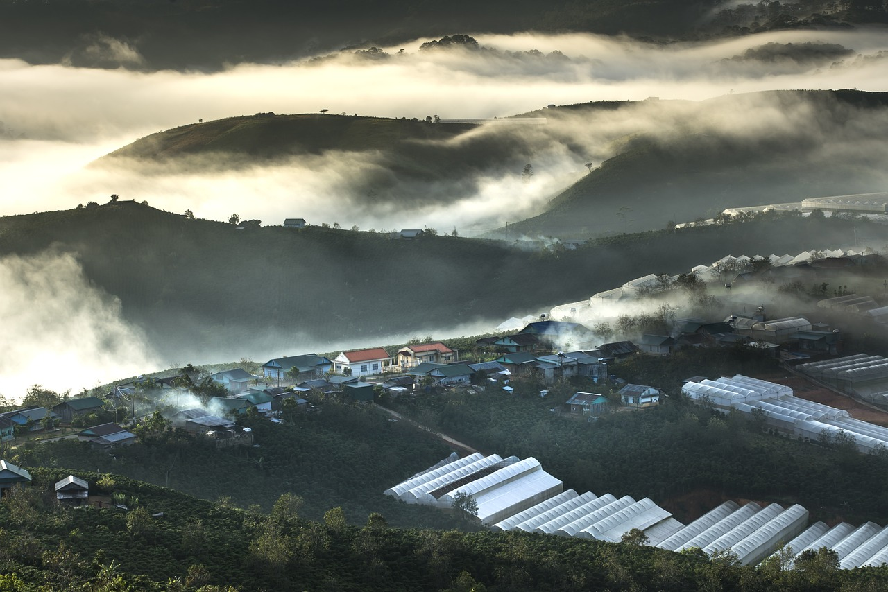
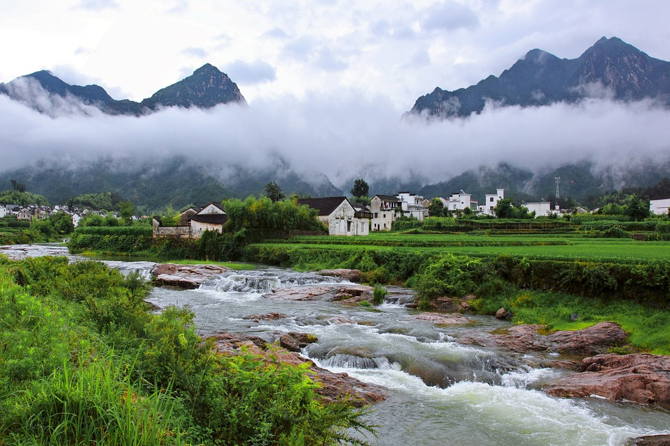

My Travel Blog
Title: Discovering the Magic of Manali: A Journey into Himalayan Bliss
Nestled amidst the majestic Himalayas, Manali captivates travelers
with its breathtaking scenery, rich culture, and plethora of
adventures. From exploring the charming lanes of Old Manali to
embarking on thrilling treks and indulging in serene moments at
ancient temples, every corner of Manali holds a treasure waiting to
be discovered. Whether seeking adrenaline-pumping activities or
moments of tranquil introspection.
Manali offers an unforgettable escape into nature's embrace, leaving
travelers spellbound with its enchanting beauty and warm
hospitality. Manali looks beautiful in all seasons. In this blog we
will see Manali in all major seasons.
Blog 1
Winter In Manali
My adventure in the snowfall at Manali was a mesmerizing journey into a winter wonderland nestled amidst the Himalayas. From the moment I arrived, the pristine white landscape captivated me, with snowflakes swirling around like enchanting sprites.
- Blanket of Whiteness: As the first snowflakes descend upon Manali, they blanket the landscape in a pristine layer of whiteness, transforming the bustling town into a winter wonderland. The snow covers everything from rooftops to trees, creating a picturesque scene straight out of a postcard.
- Quiet Serenity: With the arrival of snowfall, there comes a serene hush over Manali. The usual hustle and bustle of the streets diminish as locals and tourists alike pause to admire the beauty of the falling snow. The soft sound of snowflakes landing gently on the ground adds to the tranquility of the atmosphere.
- Frosted Landscapes: The snowfall in Manali paints the landscape with a frosty charm. The trees, once adorned with green foliage, now wear a delicate coat of snow on their branches. Mountains surrounding the town stand majestic, their peaks dusted with a fresh layer of powder, creating a breathtaking backdrop against the azure sky.
- Outdoor Adventures: Snowfall in Manali heralds a season of outdoor adventures. Tourists flock to the town to partake in a myriad of winter activities such as skiing, snowboarding, and sledding. The freshly fallen snow provides the perfect canvas for these exhilarating pursuits, attracting thrill-seekers from far and wide.
- Festive Cheer: The arrival of snowfall in Manali brings with it a sense of festive cheer. Locals and visitors come together to celebrate the winter season with joyous festivities and cultural events. From traditional music and dance performances to vibrant markets selling handmade crafts and local delicacies, the town comes alive with the spirit of winter during this magical time.
- If you want to witness the heavy snowfall in Manali, then the best time is December and January. During this time, the best places to visit are Solang Valley, Manali Town, Old Manali, Atal Tunnel, Rangri, Rohtang Pass, etc. This time is also best for taking a vacation and photography.
Blog 2
From July till September In the monsoon season, Manali enjoys pleasant climatic conditions. However, the region receives torrential rain due to which the possibility of landslides increases in this season. The rainfall transfers the region into lush green and enhances the beauty of the hill town. This is the best time for budget travelers as they can avail of alluring discounts on Manali hotels.
The waterfall plunges into its full glory and gushing streams look amazing. Although, watersports and camping remain close in the rainy season. Tourists can indulge in sightseeing and nature walk. It is recommendable to avoid trekking in the rainy season as the heavy rain can cause problems. The temperature hovers around 10? C to 16? C in the monsoon season.


About me
Hi I'm Anchal!
Introduction
I am a Software Engineer, I have 2 year of experience as Assistant Professor and I have 2 year of experience as System Analyst, and soon to be a Web Developer.
I love browsing the Internet, Technology, and Travelling.
Where I'm From
I'm originally from Muzaffarnagar, U.P. But currently I am staying in Chandigarh
More About Me
What are your favorite hobbies?
My favorite hobby is building things on the internet like ecommerce sites and travelling.
What's your dream job?
My dream job is to become a good software developer
Why do you want to be a web developer?
Because programming is awesome and programming for the internet is even more awesome.
Say hi to me on these social networks: